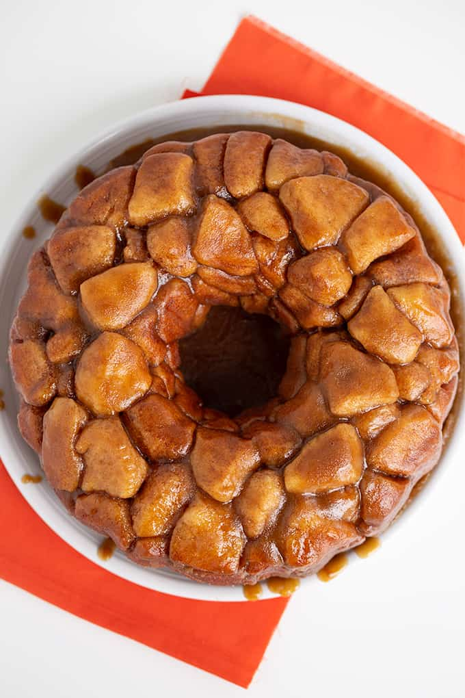

Monkey Bread

Description
Monkey bread is a soft, sweet, sticky pastry served in the United States for
breakfast or as a treat. It consists of pieces of soft baked dough sprinkled
with cinnamon. It is often served at fairs and festivals.
Ingredients
- 24 ounces of biscuit dough
- 1 cup of granulated sugar
- 1/2 cup of brown sugar
- 2 teaspoons cinnamon
- 1 cup of butter
Instructions
- Prepare pan: Heavily grease Bundt or fluted tube pan with butter (12-cup capacity). Preheat oven to 350°F.
- Prepare the dough: Separate biscuits and cut each one into four equal bite-sized pieces. Combine granulated sugar and cinnamon in a bowl or plastic bag. Drop roll each piece of dough in the sugar-cinnamon mixture and shake around to coat. Gently arrange the cinnamon-sugar biscuit pieces into the prepared pan.
- Heat syrup: In a small saucepan, combine brown sugar and butter. Add ½ cup of the remaining sugar-cinnamon mixture (discard remaining or use for another recipe). Gently heat to melt butter and bring mixture just to a boil and then immediately remove from heat. Stir until sugars have fully dissolved. Do not overcook the syrup; you simply want to help the sugar dissolve. Carefully drizzle the warm mixture over the rolled dough balls in the pan.
- Bake: Arrange pan in the center of the preheated oven and bake for about 30 minutes. Time may vary; see note below.
- Invert: Allow pan to rest for about 5 minutes, then cover with a large plate and invert. To eat, pull the desired amount off with your fingers (like a monkey would) and enjoy the gooey sweet sinful treat.